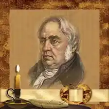
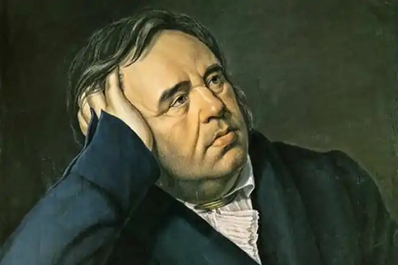
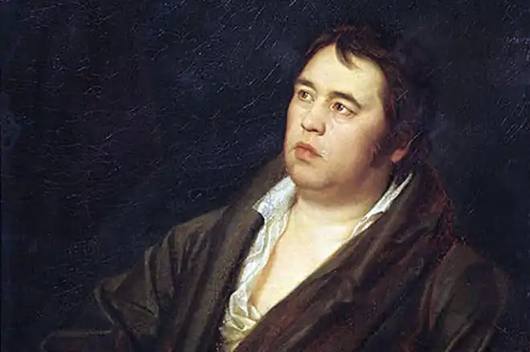

(13.02.1769 — 21.11.1844)
Російський публіцист, поет, байкар, видавець сатіріко-просвітницьких журналів. Найбільше відомий як автор 236 байок, зібраних в дев'ять прижиттєвих збірок (виходили з 1809 по 1843 рр..). Поряд з тим, що велика частина сюжетів байок Крилова є оригінальною, окремі з них сягають до байок Лафонтена (який, у свою чергу, запозичив їх у Езопа, Федра і Бабрия). Багато вислови з байок Крилова стали крилатими.
Батько, Андрій Прохорович Крилов (1736-1778), вмів читати і писати, але "наук не вчився", служив у драгунському полку, в 1772 році відзначився при захисті Яицкого містечка від пугачовців, потім був головою магістрату в Твері. Помер у капітанському званні в бідності. Мати, Марія Олексіївна (1750-1788) після смерті чоловіка залишилася вдовою. Іван Крилов перші роки дитинства провів у роз'їздах з сім'єю. Вивчився грамоті будинку (батько його був великий любитель читання, після нього до сина перейшов цілий скриню книг); французькою мовою займався в родині заможних сусідів. У 1777 р. він був записаний в цивільну службу подканцеляристом Калязинського нижнього земського суду, а потім Тверського магістрату. Ця служба була, мабуть, лише номінальною, і Крилов вважався, ймовірно, у відпустці до закінчення навчання. Навчався Крилов мало, але читав досить багато. За словами сучасника, він відвідував з особливим задоволенням народні збіговиська, торгові площі, гойдалки і кулачні бої, де штовхався між строкатим натовпом, жадібно прислухаючись до розмов простолюдинів". З 1780 року почав служити подканцеляристом за копійки. У 1782 р. Крилов ще числився подканцеляристом, але "у нього Крилова на руках ніяких справ не було". В цей час він захопився вуличними боями, стінка на стінку. А так як він був фізично дуже міцний, то часто виходив переможцем над дорослими мужиками. У кінці 1782 р. Крилов поїхав у Санкт-Петербург з матір'ю, яка мала намір клопотати про пенсії і про найкращому устрої долі сина. Крыловы залишилися в Санкт-Петербурзі до серпня 1783 р. Після повернення, незважаючи на довготривале незаконне відсутність, Крилов звільнився з магістрату з нагородженням чин канцеляриста і поступив на службу в петербурзьку казенну палату. У цей час великою славою користувався "Мельник" Аблесімова, під впливом якого Крилов написав, в 1784 р., оперне лібрето "Кофейница"; сюжет він узяв із "Живописця" Новікова, але значно змінив його і закінчив щасливою розв'язкою. Крилов відніс свою книгу Брейткопфу, який дав за неї авторові книги на 60 рублів (Расіна, Мольєра і Буало), але не надрукував. "Кофейница" побачила світ тільки в 1868 р. (у ювілейному виданні) і вважається твором вкрай юним і недосконалим. При звірянні автографа Крилова з друкованим виданням виявляється, однак, що остання не цілком справно; після видалення багатьох недосмотров видавця і явних описок юного поета, який у дійшла до нас рукописи ще не зовсім оздобив свою лібрето, вірші "Кофейницы" чи можуть назватися незграбними, а спроба показати, що новомодность (предмет сатири Крилова — не стільки продажна кофейница, скільки бариня Новомодова) і "вільні" погляди на шлюб і моральність, сильно нагадують радника в "Бригадире", не виключають жорстокість, властивої Скотининым, так само як і безліч чудово підібраних народних приказок, роблять лібрето 16-річного поета, незважаючи на невитриманість характерів, явищем для того часу чудовим. "Кофейница" задумана, ймовірно, ще в провінції, близько до того побуті, який вона зображає. У 1785 р. Крилов написав трагедію "Клеопатра" (не збереглася) і відніс її на перегляд знаменитому акторові Дмитревскому; Дмитрівська заохотив молодого автора до подальших трудів, але п'єси в цьому вигляді не схвалив. У 1786 р. Крилов написав трагедію "Філомела", яка нічим, крім достатку жахів і зойків і нестачі дії, не відрізняється від інших "класичних" тодішніх трагедій. Трохи краще написані Криловим в той же час лібрето комічної опери "Шалена родина" та комедія "Автор у передпокої", про останню Лобанов, друг і біограф Крилова, каже: "Я довго шукав цієї комедії і шкодую, що нарешті її знайшов". Дійсно, в ній, як і в "Шаленій сім'ї", крім жвавості діалогу та кількох народних "слівець", немає ніяких переваг. Цікава тільки плодючість молодого драматурга, який увійшов у близькі зносини з театральним комітетом, отримав дармової квиток, доручення перевести з лібрето французької опери "L Infante de Zamora" і надію, що "Шалена родина" піде на театрі, так як до неї вже була замовлена музика. У казенній палаті Крилов отримував тоді 80-90 рублів в рік, але своїм становищем не був задоволений і перейшов в Кабінет Її Величності. У 1788 р. Крилов втратив матір, і на руках його залишився малолітній брат Лев, про який він все життя дбав як батько про сина (той в листах називав його звичайно "тятенькой"). У 1787-1788 рр .. Крилов написав комедію "Бешкетники", де вивів на сцену і жорстоко висміяв першого драматурга того часу Я. Б. Княжніна (Рифмокрад) і його дружину, дочку Сумарокова (Таратора); за свідченням Гречка, педант Тянислов списаний з поганого віршотворця П. М. Карабанова. Хоча і в "Пустунів", замість справжнього комізму, ми знаходимо карикатуру, але ця карикатура сміла, жива і дотепна, а сцени благодушного простака Азбукина з Тянисловом і Рифмокрадом для того часу могли вважатися дуже кумедними. "Бешкетники" не тільки посварили Крилова з Княжниным, але і накликали на нього незадоволення театральної дирекції. "Пошта духів" Основна стаття: Пошта духів У 1789 р. в друкарні В. Р. Рахманінова, освіченого і відданого літературної справи людини, Крилов друкує щомісячний сатиричний журнал "Пошта духів". Зображення недоліків сучасного російського суспільства вбране тут в фантастичну форму листування гномів з чарівником Маликульмульком. Сатира "Пошти духів" і по ідеям і по ступеню глибини та рельєфності служить прямим продовженням журналів початку 70-х років (тільки гострі нападки Крилова на Рифмокрада і Таратору і на дирекцію театрів вносять новий особистий елемент), але у відношенні мистецтва зображення помічається великий крок вперед. За словами Я. К. Грота, "Козицький, Новіков, Емін були тільки розумними спостерігачами; Крилов є вже виникають художником". "Пошта духів" виходила лише з січня по серпень, так як мала всього 80 передплатників; у 1802 р. вона вийшла другим виданням. Його журнальне справа викликала незадоволення влади, і імператриця запропонувала Крилову на п'ять років за рахунок уряду поїхати подорожувати за кордон, однак той відмовився. "Глядач" і "Меркурій" У 1791-96 рр. Крилов жив у будинку В. І. Бецкого на Мільйонній вулиці, 1. У 1790 р. він написали надрукував оду на укладення миру зі Швецією, твір слабке, але все ж показує в автора розвиненої людини і майбутнього художника слова. 7 грудня того ж року Крилов вийшов у відставку; в наступному році він став власником друкарні і з січня 1792 р. починає друкувати в ній журнал "Глядач", з дуже широкою програмою, але все ж з явною схильністю до сатири, особливо в статтях редактора. Найбільш великі п'єси Крилова "Глядача" — "Каиб, східна повість", казка "Ночі", сатіріко-публіцистичні есе та памфлети ("Похвальна мова в пам'ять мого дідуся", "Мова, говоренная повесою у зборах дурнів", "Думки філософа по моді"). За цими статтями (особливо за першою і третьою) видно, як розширюється світогляд Крилова і як зріє його художній талант. В цей час він вже становить центр літературного гуртка, який вступав у полеміку з "Московським журналом" Карамзіна. Головним співробітником Крилова був А. В. Клушин. "Глядач", маючи вже 170 передплатників, в 1793 р. перетворився в "Санкт-Петербурзький Меркурій", видаваний Криловим і А. В. Клушиным. Так як в цей час "Московський журнал" Карамзіна припинив своє існування, редактори "Меркурія" мріяли поширити його повсюдно і надали своєму виданню можливо більш літературний і художній характер. В "Меркурії" вміщено всього дві сатиричні п'єси Крилова — "Похвальна мова науці вбивати час" і "Похвальна мова Ермолафиду, говоренная у зборах молодих письменників"; остання, осмеивая новий напрямок у літературі (під Ермолафидом, тобто людиною, який несе ермолафию, або нісенітницю, мається на увазі, як зауважив Я. К. Грот, переважно Карамзін) служить виразом тогочасних літературних поглядів Крилова. Цей самородок суворо дорікає карамзинистов за недостатню підготовку, за презирство до правил і за прагнення до простонародности (до лаптям, зипунам і шапок з заломом): очевидно роки його журнальної діяльності були для нього навчальними роками, і ця пізня наука внесла розлад у його смаки, що послужив, ймовірно, причиною тимчасового припинення його літературної діяльності. Найчастіше Крилов фігурує в "Меркурії", як лірик і наслідувач більш простих і грайливих віршів Державіна, причому він виявляє більше розуму і тверезість думки, ніж натхнення і почуття (особливо у цьому відношенні характерним є "Лист про користь бажань", що залишилося, втім, не надрукованим). "Меркурій" проіснував всього один рік і не мав особливого успіху. В кінці 1793 р. Крилов виїхав з Петербурга; чим він був зайнятий у 1794-1796 рр.., відомо мало. У 1797 році він зустрівся в Москві з князем С. Ф. Голіциним і поїхав до нього в маєток Заучування, як вчителі дітей, секретаря і т. п., у всякому разі не в ролі дармоїда-приживальщика. В цей час Крилов мав уже широким і різнобічним освітою (він добре грав на скрипці, знав по-італійськи і т. д.), і хоча як і раніше був слабкий в орфографії, виявився здібним і корисним викладачем мови й словесності (див. "Спогади" Ф. Ф. Вігеля). Для домашнього спектаклю в будинку Голіцина він написав шуто-трагедію "Трумф" або "Подщипа" (надруковану спершу за кордоном у 1859 році, потім в "Русской старине", 1871 р., кн. III), грубувату, але не позбавлену солі і життєвості пародію на класичну драму, і через неї назавжди покінчив з власним прагненням отримувати сльози глядачів. Меланхолія від сільського життя була такою, що одного разу приїжджі дами його застали біля ставка абсолютно голим, зарослим бородою і з нестрижені нігті. У 1801 році князь Голіцин був призначений ризьким генерал-губернатором, і Крилов визначився до нього секретарем.